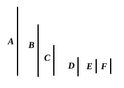
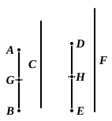
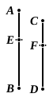
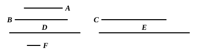
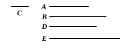
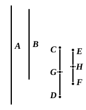
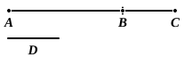
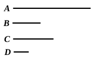
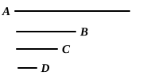

BOOK VII. PROPOSITIONS.¶
Proposition VII.1
Two unequal numbers being set out, and the less being continually subtracted in turn from the greater, if the number which is left never measures the one before it until an unit is left, the original numbers will be prime to one another.
Proposition VII.2
Given two numbers not prime to one another, to find their greatest common measure.

Proposition VII.3
Given three numbers not prime to one another, to find their greatest common measure.
Proposition VII.4
Any number is either a part or parts of any number, the less of the greater.
Proposition VII.5
If a number be a part of a number, and another be the same part of another, the sum will also be the same part of the sum that the one is of the one.
Proposition VII.6
If a number be parts of a number, and another be the same parts of another, the sum will also be the same parts of the sum that the one is of the one.
Proposition VII.7
If a number be that part of a number, which a number subtracted is of a number subtracted, the remainder will also be the same part of the remainder that the whole is of the whole.
Proposition VII.8
If a number be the same parts of a number that a number subtracted is of a number subtracted, the remainder will also be the same parts of the remainder that the whole is of the whole.
Proposition VII.9
If a number be a part of a number, and another be the same part of another, alternately also, whatever part or parts the first is of the third, the same part, or the same parts, will the second also be of the fourth.

Proposition VII.10
If a number be parts of a number, and another be the same parts of another, alternately also, whatever parts or part the first is of the third, the same parts or the same part will the second also be of the fourth.

Proposition VII.11
If, as whole is to whole, so is a number subtracted to a number subtracted, the remainder will also be to the remainder as whole to whole.
Proposition VII.12
If there be as many numbers as we please in proportion, then, as one of the antecedents is to one of the consequents, so are all the antecedents to all the consequents.
Proposition VII.13
If four numbers be proportional, they will also be proportional alternately.
Proposition VII.14
If there be as many numbers as we please, and others equal to them in multitude, which taken two and two are in the same ratio, they will also be in the same ratio ex aequali.
Proposition VII.15
If an unit measure any number, and another number measure any other number the same number of times, alternately also, the unit will measure the third number the same number of times that the second measures the fourth.
Proposition VII.16
If two numbers by multiplying one another make certain numbers, the numbers so produced will be equal to one another.

Proposition VII.17
If a number by multiplying two numbers make certain numbers, the numbers so produced will have the same ratio as the numbers multiplied.

Proposition VII.18
If two numbers by multiplying any number make certain numbers, the numbers so produced will have the same ratio as the multipliers.
Proposition VII.19
If four numbers be proportional, the number produced from the first and fourth will be equal to the number produced from the second and third; and, if the number produced from the first and fourth be equal to that produced from the second and third, the four numbers will be proportional.

Proposition VII.20
The least numbers of those which have the same ratio with them measure those which have the same ratio the same number of times, the greater the greater and the less the less.
Proposition VII.21
Numbers prime to one another are the least of those which have the same ratio with them.
Proposition VII.22
The least numbers of those which have the same ratio with them are prime to one another.
Proposition VII.23
If two numbers be prime to one another, the number which measures the one of them will be prime to the remaining number.
Proposition VII.24
If two numbers be prime to any number, their product also will be prime to the same.
Proposition VII.25
If two numbers be prime to one another, the product of one of them into itself will be prime to the remaining one.
Proposition VII.26
If two numbers be prime to two numbers, both to each, their products also will be prime to one another.
Proposition VII.27
If two numbers be prime to one another, and each by multiplying itself make a certain number, the products will be prime to one another ; and, if the original numbers by multiplying the products make certain numbers, the latter will also be prime to one another [and this is always the case with the extremes].

Proposition VII.28
If two numbers be prime to one another, the sum will also be prime to each of them ; and, if the sum of two numbers be prime to any one of them, the original numbers will also be prime to one another.
Proposition VII.29
Any prime number is prime to any number which it does not measure.
Proposition VII.30
If two numbers by multiplying one another make some number, and any prime number measure the product, it will also measure one of the original numbers.
Proposition VII.31
Any composite number is measured by some prime number.
Proposition VII.32
Any number either is prime or is measured by some prime number.
Proposition VII.33
Given as many numbers as we please, to find the least of those which have the same ratio with them.
Proposition VII.34
Given two numbers, to find the least number which they measure.
Proposition VII.35
If two numbers measure any number, the least number measured by them will also measure the same.
Proposition VII.36
Given three numbers, to find the least number which they measure.

Proposition VII.37
If a number be measured by any number, the number which is measured will have a part called by the same name as the measuring number.

Proposition VII.38
If a number have any part whatever, it will be measured by a number called by the same name as the part.
Proposition VII.39
To find the number which is the least that will have given parts.